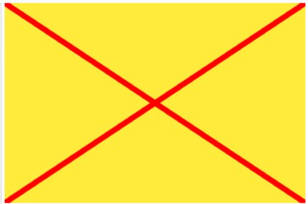

Du schaust dir diese Seiten mit einem Browser an, also weisst du schon, wie man ihn bedient. Wir brauchen hier sowieso nur ein paar Tasten, die auf deinem Browser oben links zu finden sind - wahrscheinlich, denn es gibt ziemlich viele Browser, und jeder sieht ein bisschen anders aus.
screenshot Browsers 
Mit der "Zurück-Taste" kommst du auf eine vorher besuchte Seite zurück.
Mit der "Vorwärts"-Taste kommst du dann wieder auf die Seite, von der aus
du "Zurück" gegangen bist.
Für p5 wichtig ist die "Neu laden" (oder
"Auffrischen") Taste: wenn du dich verheddert hast und nichts mehr
funktioniert und du ganz von vorne anfangen willst, kannst du diese Taste
drücken. Das wird am Anfang häufiger vorkommen, ist vollkommen ok und geht
oft schneller als die Suche nach einem Tippfehler. Mit "Neu laden" wird
allerdings alles gelöscht, was immer du schon geschrieben hast. Deswegen fragen dich
die meisten Browser auch: "Webseite neu laden?", was du mit "Neu laden"
bestätigen musst - wenn du dir sicher bist, dass du alles wegwerfen
willst.
Unterschiedliche Tastaturen gibt es wahrscheinlich sogar noch mehr als Browser. Die Buchstaben und Zahlen zu finden, sollte trotzdem nicht allzu schwer sein - aber wir brauchen zum Programmieren auch noch alle möglichen Klammern und Sonderzeichen.
Die runden Klammern finden sich auf den meisten Tastaturen über den Zahlen 8 und 9, wenn du die Umschalttaste (auch "Shift"-Taste genannt) und diese Zahlen gleichzeitig drückst. Häufig werden mit der ALT (alternative Taste) oder ALT GR (alternative Grafiktaste) und den Zahlen 8 und 9 die eckige Klammern ausgegeben, und mit ALT und 7 und 0 die geschweiften Klammern. Bei einem Mac ist es statt der ALT die "Option" Taste, die gedrückt werden muss.
screenshot Browsers
Wenn du alle möglichen Kombinationen erfolglos versucht hast, kannst du zur Not die Klammern kopieren und einfügen, die von Anfang an schon im p5 Editor stehen (oder jemanden fragen - zur Not auch das Internet).)